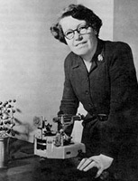

Helen Dick Megaw (1907 - )

I first met Helen Megaw in 1969 at the StonyBrook IUCr Meeting. She was looking for a postdoctoral assistant to work on phase transitions in sodium niobate, and Kathleen Lonsdale, who had been my Ph.D. supervisor, had recommended me for this post. At the time I was at the Chemistry Department at Harvard; my interest was in the crystallography of organic compounds. I therefore accepted Helen's offer with some reluctance, because I did not feel I could cope with inorganic materials. Anyway, it all worked out well and I went to the Cavendish Laboratory and turned myself into some sort of physicist.I soon discovered that my boss was a remarkable person: formidable in some ways, but also very kind and patient. She had a particularly interesting gift: if you wanted to know what a particular crystal structure looked like from a particular direction, she could somehow turn it around in her mind and then sketch it for you. In the days before computer graphics, this was a very useful trick.
I think it is worth repeating here the story I told at the Leeds conference dinner, because it reveals another aspect of Helen's character. I wrote a paper on the tilting of octahedra in perovskites and sent it to the Editor of Acta Cryst. Eventually I received a reply including more than 20 pages of closely typed comments from a referee. How dare the referee pull my paper apart like this!
I went to Helen to show her, complaining bitterly about the referee and his attitude. Helen looked through the comments and agreed they were over the top. Anyway, she spent hours with me helping me to satisfy many of the comments raised and the revised paper was sent back. I had to admit, that the the paper was in fact much better, and subsequently it became one of the most quoted of my published works. It was a few years later that Helen confided that she had been the referee! The Editor had sent it to her in error and she had pointed this out, but said that she could be objective nonetheless.
I was reminded of all this, when recently I was approached by Martha Keyes at the University of California Los Angeles. Martha has been putting together a series of web pages on the impact of women in physics, and this includes some pages on crystallographers.(see list opposite ( I was able to supply some information for this regarding Helen Megaw and I was also able to put her in touch directly with Helen in Ballycastle. A copy of their information about Helen is printed on the opposite page.
Contributions of 20th Century Women to Physics
In 1999 the American Physical Society(APS) will celebrate its centenary with
many events which will include exhibits on the history of physics. (see
their Web site at URL
http://www.aip.org/history/exhibit.htm ) For
the celebration, the Committee on the Status of Women in Physics and the
Forum on the History of Physics of the APS are co-sponsoring the creation of
an historical archive entitled Contributions of 20th Century Women
to Physics. This is a project whose purpose is to compile an
electronic archive of citations of women who have made original and
important contributions to physics this century. The citations include brief
descriptions of these contributions documented with references to published
papers. Some biographical information is also included. Their list of
women crystallographers is:
Please get in touch with the organisers at URL
http://www.physics.ucla.edu/~cwp/
for further information or to suggest more crystallographers for inclusion
in the list.
Here is part of the information on Helen Megaw, one of our most creative BCA members.
Some Important Contributions:
Some Important Publications:
Books:
Honors
Sc. D. University of Cambridge 1967,
Fellow, Institute of Physics
Fellow, Mineralogical Society of America,
Roebling Medal, Mineralogical Society of America 1989
[Megaw was the first woman to receive this medal.]
The name Helen D. Megaw Island was given to an island in the Antartica, located at about 66.9 ° S, 67.7 ° W. This honor was bestowed when the Glaciological Society was naming features in that neighborhood after scientists who had done some original work on ice. [See Ice 9: 10-11, 16 (1962).]
Jobs/Positions
Post-doctoral research
1934-35 with Prof. H. Mark, University of Vienna
1935-36 with Prof. F. Simon, Clarendon Laboratory, Oxford University
1936-43 Assistant Mistress (1) Bedford High School
(2) Bradford Girls' Grammar School
1943-45 Crystallographic scientist, Materials Research Laboratory, Philips Lamps,Mitcham
1945-46 Assistant Director of Research in Crystallography, Birkbeck College, London
In Cambridge
1946-49 Assistant for Experimental Research in Crystallography, Cavendish Laboratory
1946-72 Fellow, Lecturer, and Director of Studies in Physical Science, Girton College
1949-59 Assistant Director of Research in Crystallography, Cavendish Laboratory
1959-72 Lecturer, Cambridge University
1968-present Life Fellow, Girton College, Cambridge
Councillor, Mineralogical Society of Great Britain and Ireland 1971-74.
Education
Queen's University, Belfast 1925-26
B.S. Girton College, Cambridge 1930
Ph.D. (mineralogy and petrology) University of Cambridge 1934
Page last updated 13 Aug 97
 Click here to return to BCA homepage
Click here to return to BCA homepage